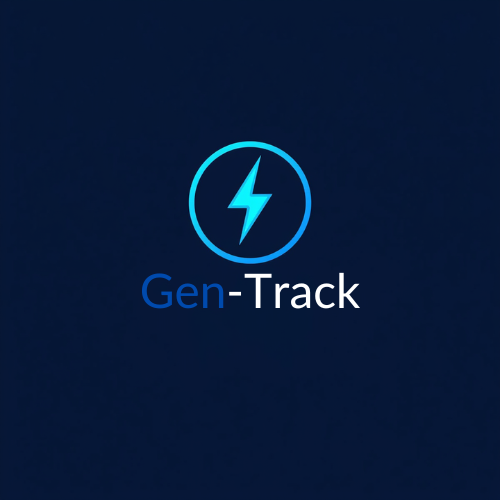

<div class="sidebar">
    <!-- Logo tetap di tengah -->
    
    
    <!-- Nav items dalam wrapper agar bisa di-align sendiri -->
    <div class="nav-items-wrapper">
        <a href="index.html" id="link-dashboard" class="nav-item">
            <span class="nav-icon"><i class="fas fa-home"></i></span>
            <span class="nav-text">Dashboard</span>
        </a>
        
        <a href="engine.html" id="link-engine" class="nav-item">
            <span class="nav-icon"><i class="fas fa-cogs"></i></span>
            <span class="nav-text">Engine</span>
        </a>
        
        <a href="alarm.html" id="link-alarm" class="nav-item">
            <span class="nav-icon"><i class="fas fa-bell"></i></span>
            <span class="nav-text">Alarms</span>
        </a>
        
        <a href="history.html" id="link-history" class="nav-item">
            <span class="nav-icon"><i class="fas fa-history"></i></span>
            <span class="nav-text">History</span>
        </a>
        
        <a href="maintenance.html" id="link-maintenance" class="nav-item">
            <span class="nav-icon"><i class="fas fa-tools"></i></span>
            <span class="nav-text">Maintenance</span>
        </a>
        
        <a href="reports.html" id="link-reports" class="nav-item">
            <span class="nav-icon"><i class="fas fa-chart-bar"></i></span>
            <span class="nav-text">Reports</span>
        </a>
        
        <a href="login.html" id="logout-btn" class="nav-item">
            <span class="nav-icon"><i class="fas fa-sign-out-alt"></i></span>
            <span class="nav-text">Logout</span>
        </a>
    </div>
</div>